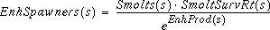

[4.5]
[4.5] The model assumes that hatchery production is maintained at the average 1979-1981 level unless instructed otherwise. In such cases, the first step in modeling changes in enhancement activities (which are input as changes in smolt production) is to compute the increased (or decreased) number of spawners required to meet the new smolt production goal:

[4.6] If production is decreased, eq (4.5) is used to compute AgeOneFish, but the hatchery spawning goal is reduced to
 . Again, excess spawners are transferred to terminal catch.
. Again, excess spawners are transferred to terminal catch.If production is increased, additional AgeOneFish are computed using eq (4.5), with EnhProd replacing HatchProd to reflect the lower production efficiency. If the number of spawners exceeds the number required for both base and enhanced production, the excess spawners are added to the terminal catch, with the exception of one stock -- Georgia Strait Hatchery (GSH). In this case, the additional spawners (up to a maximum of 5,000) are assumed to be returned to the river and are modeled as natural spawners using the truncated Ricker curve (described in the next section). Additional excess spawners are transferred to terminal catch. Fig. 4.3 illustrates all hatchery production functions.
Fig. 4.3 Hatchery production functions, with and without enhancement. The term
 S equals EnhSpawners (i.e., the change in the number of spawners required to meet the changed smolt production goal).
S equals EnhSpawners (i.e., the change in the number of spawners required to meet the changed smolt production goal).